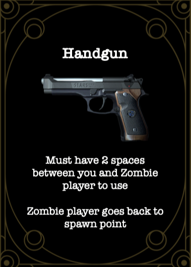
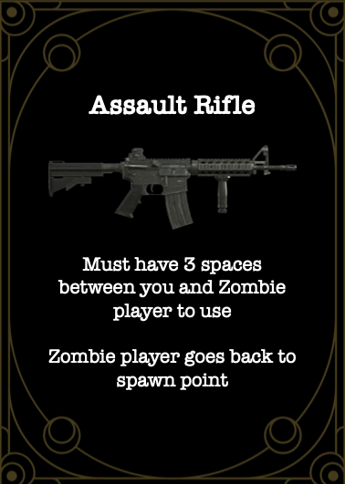
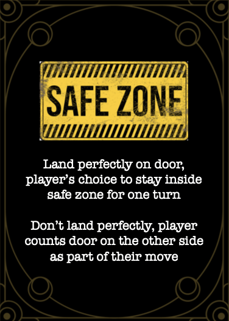
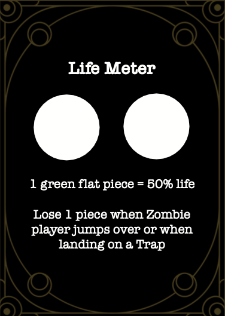
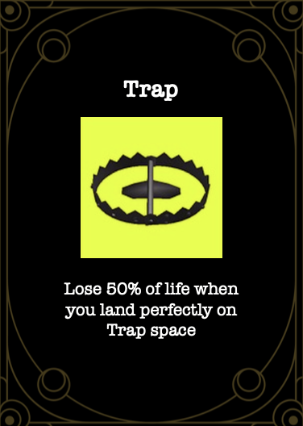
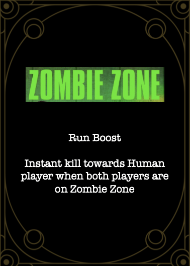
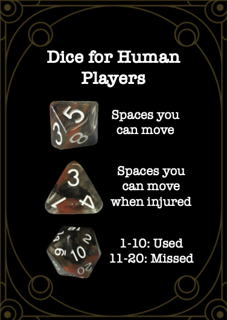
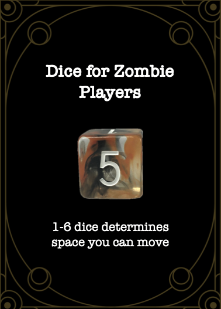
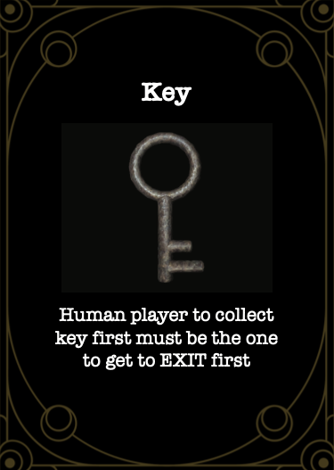
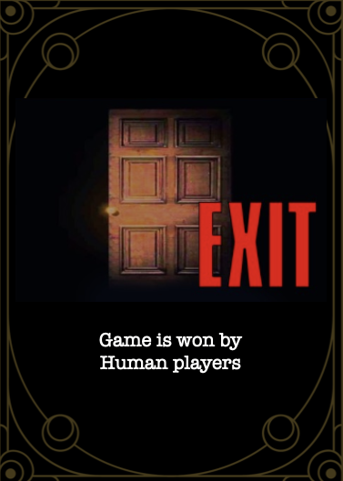

These cards were created for an original board game based on the Resident Evil 1 remake from 2001. The video game itself has the
player trying to escape the Spencer Mansion while also trying to avoid the many infected and mutated characters.
This was a group project from Web Design I, and I was tasked with making the cards. I wanted to capture the aesthetic
of the mansion that looks run down, but still carries an elegance of wealth. The images used on the cards
are from the video game that way the players still have a sense of familiarity when playing.